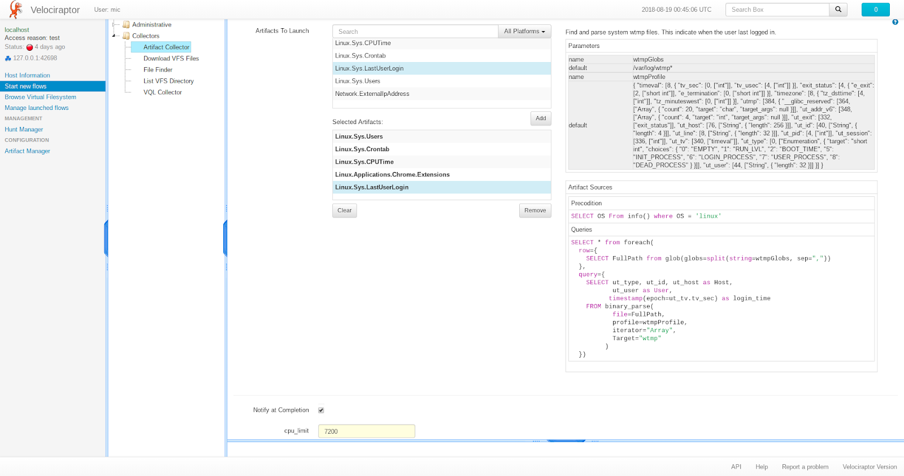
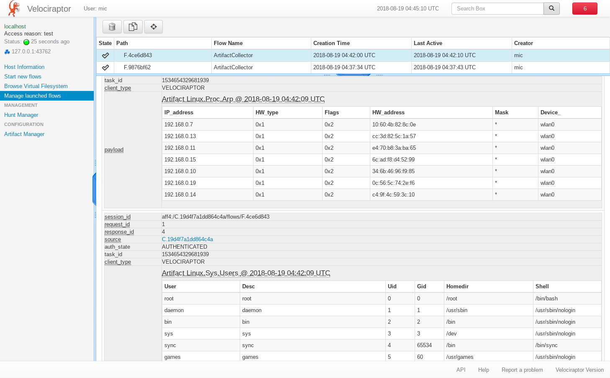

First a bit of history. When we first started writing endpoint monitoring tools (With GRR then Rekall Agent) we implemented the ability to collect files, registry keys and other data. If an analyst wanted to collect, say the chrome extensions, they would need to know where chrome extensions typically reside ( %homedir%/.config/google-chrome/Extensions/**) and enter that in each time.
We soon realized this was error prone and required too much mental overhead for analysts to constantly remember these details. GRR inspired the creation of the Forensic Artifacts project. It was created in order to solve the problem of documenting and sharing knowledge about forensic evidence file and registry location.
Further, since GRR can only collect files and has limited parsing support, the parsing and interpretation of the artifacts is not specified. GRR Artifacts can only specify file sets (via globs), registry key/value sets and collections of other artifacts. These are a bit limited in their expressiveness, and so it means that GRR has to augment forensic artifacts with a lot of GRR specific things (like post processing, parsing etc) to make them useful. Although Forensic Artifacts are supposed to be tool agnostic they carry over a lot of GRR implementation details (e.g. the knowledge base interpolations, glob patterns etc).
Next came OSQuery with their SQL like syntax. This was a huge advancement at the time because it allows users to customize the data they obtained from their endpoint, and ask questions from the entire enterprise at once. For the first time it was possible to combine data from multiple sources (i.e. OSQuery "tables") in an intelligent way and customize the output to fit a processing pipeline, rather than write a lot of interface glue code to filter and extract data.
Currently OSQuery has grown many tables - each table typically implements a specific parser to extract one set of data. In this sense OSQuery also solves the same problem as GRR's artifacts - they provide a single named entity (called a table in OSQuery) which produces results about one type of thing (e.g. arp_cache table produces results about the arp cache entries). The user can then just ask for the arp cache and doesn't care how we get it.
The next logical development was the development of Velociraptor Query Language (VQL). VQL is not pure SQL - instead it is an SQL like language with a severely reduced feature set. The main difference with regular SQL is the ability to provide arguments to table names - that is a VQL plugin is a data source that can receive arbitrary arguments.
This changes the entire game - since we can now provide high level functions to control plugin execution. Combined with the VQL ability to combine multiple queries into subqueries this opens the door for very complex types of queries.
For example, consider the OSQuery users table. This table reads the system's /etc/passwd file and parses out the different columns. It is hard coded into the OSQuery binary. While this is a very simple table, it shares its operation with many other similar tables. Other tables open similar files, parse them line by line and return each field as the query's columns. There are many similar files that contain useful information on a system. If one was to add a parser for each one in OSQuery, then they need to write a small amount of code, recompile the binary and push it out to clients.
Re-deploying new code to endpoints is a difficult task in practice. There is testing and release processes to employ. Furthermore if a local modification is made to OSQuery one needs to submit PRs upstream, otherwise the codebases may diverge and maintainance would be difficult.
Rather than have a built in plugin for each such table, Velociraptor simply includes a number of generic parsers which may be reused for parsing different files. For example, consider the following VQL Query:
SELECT User, Desc, Uid, Gid, Homedir, Shell FROM parse_records_with_regex( file="/etc/passwd", regex='(?m)^(?P<User>[^:]+):([^:]+):' + '(?P<Uid>[^:]+):(?P<Gid>[^:]+):(?P<Desc>[^:]*):' + '(?P<Homedir>[^:]+):(?P<Shell>[^:\\s]+)')
The parse_records_with_regex() plugin simply applies one or more regex to a file and each match is sent as a record. In this case, each line is matched and parsed into its components automatically. Note how the query produces the same results as OSQuery's users table, but uses completely generic parsers.
The generic parser can be used to parse many other file types. Here is query which parses debian apt-source lines:
SELECT * FROM parse_records_with_regex( file="/etc/apt/sources.list", regex="(?m)^ *(?P<Type>deb(-src)?) "+ "(?:\\[arch=(?P<Arch>[^\\]]+)\\] )?" + "(?P<URL>https?://(?P<base_uri>[^ ]+))" + " +(?P<components>.+)")
Having the ability to control parsing directly in the query opens up many possibilities. What if we need to parse new files which do not have an OSQuery parser yet (maybe an enterprise application configuration file)? We can easily construct a query using the generic parsers and issue it to the endpoint to support new file format.
In the previous section we saw how we can express very complex queries to support novel parsing scenarios. However it is hard for users to directly issue the queries - who can remember this complex regex and type it in every time?
We clearly need some way to record the queries in a simple, reusable way. This sounds a lot like GRR's Artifacts! What if we could just write the complex query in a YAML file and then just said to Velociraptor - go collect that artifact and the correct queries would be issued to the client automatically.
Rather than try to make artifacts generic, we define Velociraptor Artifacts as YAML files which simply bundle together a bunch of VQL statements that together run a particular query. In a sense, Velociraptor's artifacts are similar to OSQuery's table definition (since they specify output columns), except they are defined completely by the YAML definition file, using generic reusable VQL plugins, put together with VQL queries.
Here is an example of the the Linux.Sys.Users artifact - this is the equivalent artifact to OSQuery's users table:
name: Linux.Sys.Users description: Get User specific information like homedir, group etc from /etc/passwd. parameters: - name: PasswordFile default: /etc/passwd description: The location of the password file. sources: - precondition: | SELECT OS From info() where OS = 'linux' queries: - SELECT User, Desc, Uid, Gid, Homedir, Shell FROM parse_records_with_regex( file=PasswordFile, regex='(?m)^(?P<User>[^:]+):([^:]+):' + '(?P<Uid>[^:]+):(?P<Gid>[^:]+):(?P<Desc>[^:]*):' + '(?P<Homedir>[^:]+):(?P<Shell>[^:\\s]+)')
The artifact has a specific name (Linux.Sys.Users) and a description. The Artifact will only run if the precondition is satisfied (i.e. if we are running on a linux system). Running the artifact locally produces the following output:
$ velociraptor artifacts collect Linux.Sys.Users +-------------------+-------------------------+-------+-------+--------------------------+ | USER | DESC | UID | GID | HOMEDIR | +-------------------+-------------------------+-------+-------+--------------------------+ | root | root | 0 | 0 | /root | | daemon | daemon | 1 | 1 | /usr/sbin | | bin | bin | 2 | 2 | /bin | | sys | sys | 3 | 3 | /dev | | sync | sync | 4 | 65534 | /bin | | games | games | 5 | 60 | /usr/games | | man | man | 6 | 12 | /var/cache/man | | lp | lp | 7 | 7 | /var/spool/lpd | | mail | mail | 8 | 8 | /var/mail |
We just demonstrated that Velociraptor's artifact produces the same output as OSQuery's users table - so what? Why use an artifact over hard coding the table in the executable?
Velociraptor is inherently a remote endpoint monitoring agent. Agents are installed on many end points and once installed it is often difficult to remotely update them. For various reasons, endpoints are often difficult to upgrade - for example, they might be off the corporate LAN, or have a broken update agent.
In particular, when responding to a major incident, we often have to rapidly deploy a new hunt to search for an indicator of compromise. In most cases we don't have time to go through proper software deployment best practice and upgrade our endpoint agent in rapid succession (it typically takes weeks to have endpoint agents upgraded).
However, Velociraptor's artifacts allow us to write a new type of parser immediately since it is just a YAML file with VQL statements, we can push it immediately to the clients with no code changes, rebuild, or redeploy scripts. That is very powerful!
Not only can we add new artifacts, but we can adapt artifacts on the fly to different systems - perhaps there is a slightly different version of Linux which keeps files in different locations? Or maybe a slightly different format of the file we are trying to parse. Being able to adapt rapidly is critical.
Velociraptor exposes artifacts via two main mechanisms. The first is the Artifact Collector flow. This flow presents a special GUI which allows us to view the different artifacts, choose which ones we want to launch and describes them:
As we can see in the screenshot above, the artifact collector flow allows the user to inspect the artifacts, before issuing the VQL to the client. The responses are received by the server and displayed as part of the same flow:
This is a pretty easy set and forget type system. However, Velociraptor makes artifacts available within any VQL query too. The artifact simply appears as another VQL plugin. Consider the following VQL Query that filters only user accounts which have a real shell:
$ velociraptor query --format text "SELECT * FROM Artifact.Linux.Sys.Users() where Shell =~ 'bash'" +------+------+------+------+-----------+-----------+ | USER | DESC | UID | GID | HOMEDIR | SHELL | +------+------+------+------+-----------+-----------+ | root | root | 0 | 0 | /root | /bin/bash | | mic | | 1000 | 1000 | /home/mic | /bin/bash | +------+------+------+------+-----------+-----------+ SELECT * FROM Artifact.Linux.Sys.Users() WHERE Shell =~ 'bash'
An artifact definition can use other artifacts by simply issuing queries against these artifact plugins. This forms a natural system of interdependency between artifacts, and leads to artifact reuse.
Previously we described Velociraptor artifacts as having some properties in common with GRR's artifacts (pure YAML, reusable and server side) and OSQuery's tables (very detailed and potentially complex parsers, directly using APIs and libraries). We said that Velociraptor attempts to replace many of the specific "one artifact per table" model in OSQuery with a set of YAML files referencing generic plugins.
Velociraptor's artifacts can never fully emulate all OSQuery's tables because some OSQuery tables call specific APIs and have very complex operation. However, most of OSQuery's tables are fairly simple and can be easily emulated by Velociraptor artifacts. In this sense - Velociraptor lies somewhere in between GRR's simple collect all files and registry keys without parsing them, and OSQuery's specialized parsers. However VQL is quite capable, as we shall see. Although we can not implement all tables using pure VQL queries, the ability to implement many artifacts this way provides us with unprecedented flexibility and enables rapid response to evolving threats.
Let's looks at some artifacts that demonstrate this flexiblity.
Debian packages keep a manifest file with records delimited by an empty line. Each record consists of possible fields.
- LET packages = SELECT parse_string_with_regex( string=Record, regex=['Package:\\s(?P<Package>.+)', 'Installed-Size:\\s(?P<InstalledSize>.+)', 'Version:\\s(?P<Version>.+)', 'Source:\\s(?P<Source>.+)', 'Architecture:\\s(?P<Architecture>.+)']) as Record FROM parse_records_with_regex( file=linuxDpkgStatus, regex='(?sm)^(?P<Record>Package:.+?)\\n\\n') - SELECT Record.Package as Package, Record.InstalledSize as InstalledSize, Record.Version as Version, Record.Source as Source, Record.Architecture as Architecture from packages
The above query uses the parse_records_with_regex() plugin to split the file into records (anything between the Package: and the next empty line). Each record is then parsed separately using the parse_string_with_regex() VQL function. Being able to parse in two (or more) passes makes writing regexes much easier since they can be simplified greatly.
An example of a sophisticated artifact is the chrome extensions artifact. It implements the following algorithm:
The full artifact is rather long so will not be listed here in full, but are a couple of interesting VQL plugins which make writing artifacts more powerful.
The foreach() plugin runs a query and for each row produced, a second query is run (with the first row present in the scope). This is similar to SQL's JOIN operator but more readable. For example the following query executes a glob on each user's home directory (as obtained from the password file):
LET extension_manifests = SELECT * from foreach(
row={
SELECT Uid, User, Homedir from Artifact.Linux.Sys.Users()
},
query={
SELECT FullPath, Mtime, Ctime, User, Uid from glob(
globs=Homedir + '/' + extensionGlobs)
})
Note how the query is assigned to the variable "extension_manifests" which can be used as an input to other queries. The if() plugin evaluates a condition (or a query) and runs the "then" query if true, or the "else" query:
LET maybe_read_locale_file = SELECT * from if(
condition={
select * from scope() where Manifest.default_locale
},
query={
SELECT Manifest, Uid, User, Filename as LocaleFilename,
ManifestFilename, parse_json(data=Data) AS LocaleManifest
FROM read_file(
-- Munge the filename to get the messages.json path.
filenames=regex_replace(
source=ManifestFilename,
replace="/_locales/" + Manifest.default_locale + "/messages.json",
re="/manifest.json$"))
},
else={
-- Just fill in empty Locale results.
SELECT Manifest, Uid, User, "" AS LocaleFilename, "" AS ManifestFilename,
"" AS LocaleManifest FROM scope()
})
It is also possible to parse binary files with VQL. For example, consider the wtmp file parser implemented in the Linux.Sys.LastUserLogin artifact. This artifact uses the binary_parser() VQL plugin which accepts a Rekall style profile string to instantiate an iterator over the file. Since the wtmp file is simply a sequence of wtmp structs, we can iterate over them in a query.
SELECT * from foreach(
row={
SELECT FullPath from glob(globs=split(string=wtmpGlobs, sep=","))
},
query={
SELECT ut_type, ut_id, ut_host as Host, ut_user as User,
timestamp(epoch=ut_tv.tv_sec) as login_time
FROM binary_parse(
file=FullPath,
profile=wtmpProfile,
iterator="Array",
Target="wtmp"
)
})
We started implementing many of the simpler OSQuery tables using VQL. For the remaining tables (the ones that need to call out to libraries or more complex APIs), we will integrate these using a set of specialized VQL plugins over time.